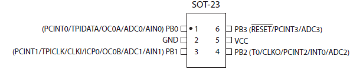
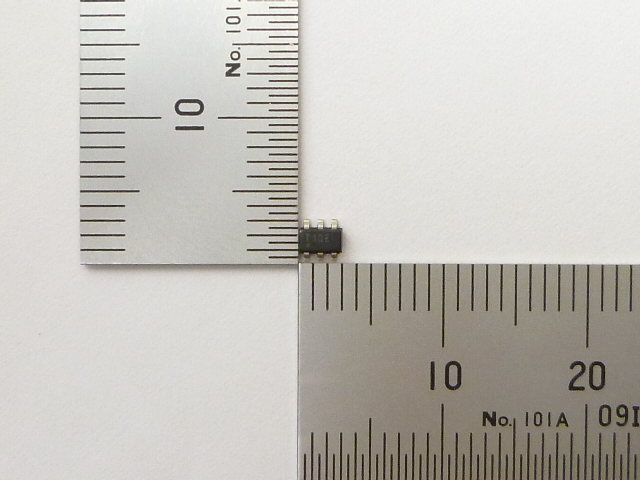
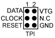

Memo fact sheet 
Usage
Programming
The chip is so small it cannot use a SPI interface but uses instead the TPI (Tiny Programming Interface). For the AVR mkII programmer, explanation is
here.

Top view of the connector on the circuit board - Pin 1 = red wire
REMINDER: once you program it, the program will not start running (!). You have to unplug the /RESET wire (connecting the Tiny10 to the AVR programmer)
and you have to unplug the AVR ISP mkII from the USB (!!) Why? Maybe the /RESET line stays forced low. I tried to add a pullup but to no avail. This stays a mystery so far but the article here under in the links mentions the same problem...
Links
Sample codes
All the source codes and samples programs in 1 solution : [[https://github.com/AlanFromJapan/alanarduinotools/tree/master/Attiny10]]
Random number generator in assembler
I found it
here. Adapted it to use with Attiny10, it uses 4 registers r16-19. A bit more work and you could store the last value in SRAM instead, but I didn't need to so I let it as-is...
init_vars_rnd:
; init the value so it can be randomized
ldi r16, 0xad
ldi r17, 0xad
ldi r18, 0xad
ldi r19, 0xad
main:
rjmp main ; your program here
; http://www.avrfreaks.net/forum/very-fastsmall-random-number-generator
; 31-bit random number
; primitive polynomial order 31
; (1)0100000 10101010 10010101 10110101 (20 AA 95 B5)
; shift before XOR
rand_31:
push r24
lsl r16 ; shift first
rol r17
rol r18
rol r19
sbrs r19,7 ; test MSB
rjmp rand_31_outro ; clear, no XOR
ldi r24,0xB5 ; first poly byte
eor r16,r24 ; XOR it in
ldi r24,0x95 ; second byte of poly
eor r17,r24
ldi r24,0xAA ; same routine
eor r18,r24
ldi r24,0x20
eor r19,r24
rand_31_outro:
pop r24
ret
Watchdog
Took me some hours to get this one working, as usual nowhere to be found a simple helloworld version of the watchdog for Attiny10... well, there it is fixed now.
README: the fuse WDTON must be UNPROGRAMMED (=not checked), otherwise behavior is always to reset, not goto interrupt.
.CSEG
.ORG 0x0000
rjmp main ;1 0x0000 RESET External Pin, Power-on Reset,VLM Reset, Watchdog Reset
rjmp neant ;2 0x0001 INT0 External Interrupt Request 0
rjmp neant ;3 0x0002 PCINT0 Pin Change Interrupt Request 0
rjmp neant ;4 0x0003 TIM0_CAPT Timer/Counter0 Input Capture
rjmp neant ;5 0x0004 TIM0_OVF Timer/Counter0 Overflow
rjmp neant ;6 0x0005 TIM0_COMPA Timer/Counter0 Compare Match A
rjmp neant ;7 0x0006 TIM0_COMPB Timer/Counter0 Compare Match B
rjmp neant ;8 0x0007 ANA_COMP Analog Comparator
rjmp WDT_off ;9 0x0008 WDT Watchdog Time-out
rjmp neant ;10 0x0009 VLM VCC Voltage Level Monitor
rjmp neant ;11 0x000A ADC ADC Conversion Complete (1)
; ---------------------------------------------------------
; a dummy handler for unused interrupts
neant:
reti
main:
;----------- Watchdog setup start ----------------------------------------
;No interrupts temporarily please
cli
;no reset on watchdog! (clear bit WDRF in RSTFLR)
in r16, RSTFLR
andi r16, ~(1 << WDRF)
out RSTFLR, r16
; WDP2 | WDP1 => every second %20 !WDE | WDIE => interrupt on watchdog timeout
ldi r17, (1 << WDIE | 1 << WDP2 | 1 << WDP1 | 0 << WDE)
ldi r16, 0xD8 ;0xD( magic value to write in CCP, and then within 4 cycles you can update WDTCSR
out CCP, r16
out WDTCSR, r17
sei
;----------- Watchdog setup end ----------------------------------------
loop:
nop ; main body
rjmp loop
; Watchdog interrupt body
WDT_off:
cli
;... do something every sec
sei
;reti because it's an interrupt
reti